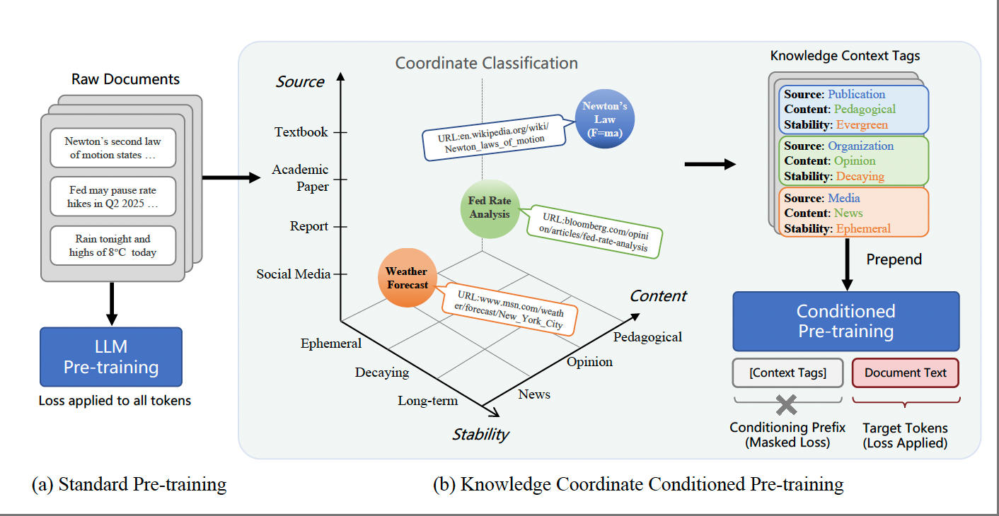
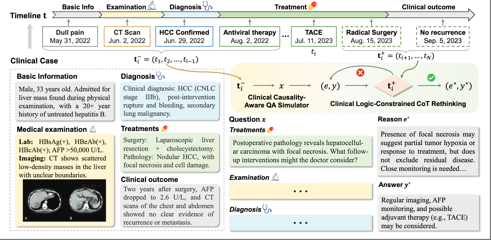
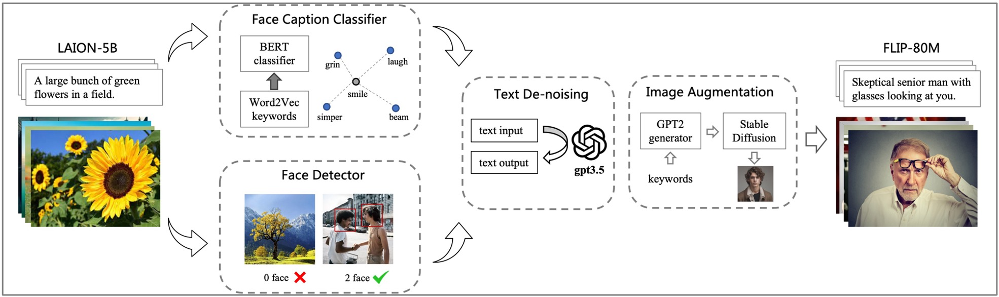
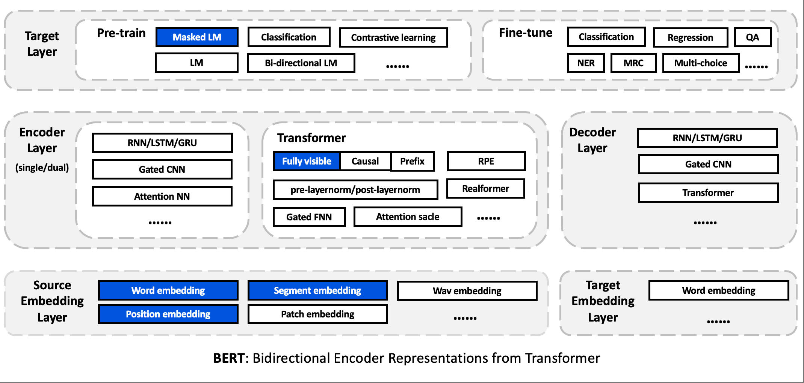
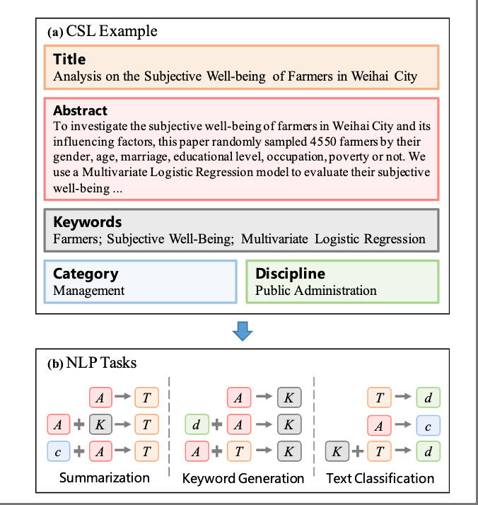
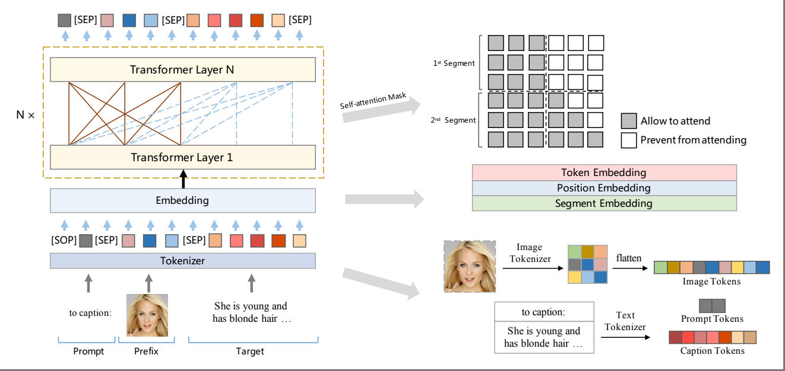
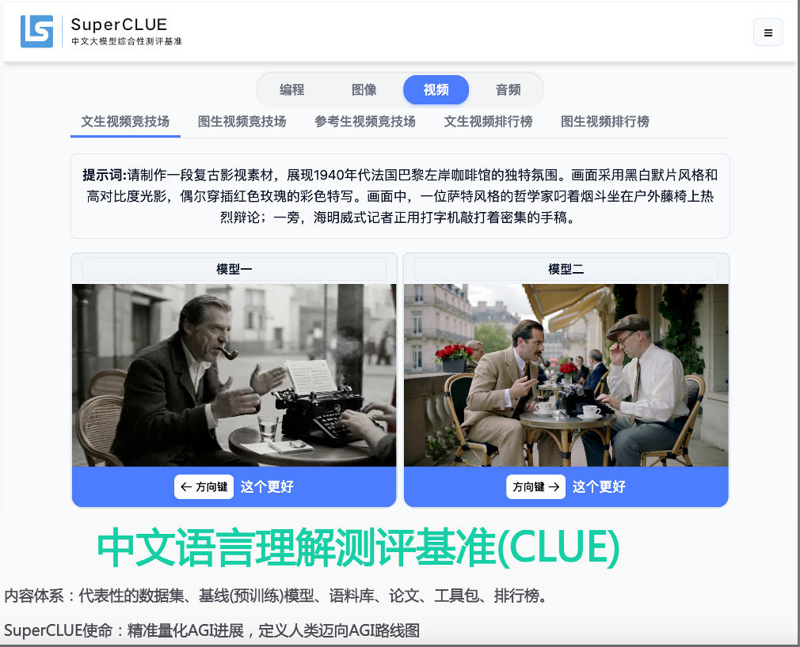

ACL 2026KoCo: Conditioning Language Model Pre-training on Knowledge Coordinates
The 64th Annual Meeting of the Association for Computational Linguistics (ACL 2026)
Assistant Researcher · Department of Electronic Engineering, Tsinghua University
I received my B.Eng. from Central South University and my Ph.D. from Shenzhen University. My research focuses on large-model pre-training, currently centered on Knowledge Context: exploring how to incorporate contextual information into pre-training so that models learn not only knowledge itself, but also the conditions under which such knowledge holds.
Previously, I worked extensively on model frameworks, training methods and evaluation data, and am a core contributor of UER-py, TencentPretrain, Linly, CLUE Benchmark, CSL, and other open-source projects. My broader interests include data engineering and synthetic data for large language models.
I am looking for academic and industry collaborators for the Knowledge Context research program — feel free to reach out.
Full list on Google Scholar.

ACL 2026The 64th Annual Meeting of the Association for Computational Linguistics (ACL 2026)

AAAI 2026 (Oral)Proceedings of the AAAI Conference on Artificial Intelligence (AAAI 2026)

ACM MM 2024 (Oral)Proceedings of the 32nd ACM International Conference on Multimedia (ACM MM 2024)
2024 IEEE International Conference on Acoustics, Speech and Signal Processing (ICASSP 2024)

ACL 2023Proceedings of the 61st Annual Meeting of the Association for Computational Linguistics (ACL 2023)

COLING 2022Proceedings of the 29th International Conference on Computational Linguistics (COLING 2022)

ACM MM 2022Proceedings of the 30th ACM International Conference on Multimedia (ACM MM 2022)

COLING 2020Proceedings of the 28th International Conference on Computational Linguistics (COLING 2020)